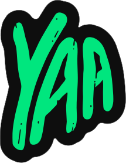

Druck Cyrillic Heavy
Roboto Flex — акцентные числа
Inter Tight — основной наборный текст
hero 64 · h1 32 · h2 24 · body 14 · label 11

YAA Graph Guide / FoundationsОдинаковые токены, состояния и компоненты в dark/light теме.
| Канал | Расход | ROMI |
|---|---|---|
| VK Ads | 120 000 ₽ | 3,53 |
| Яндекс Директ | 98 000 ₽ | 2,91 |
| Органика | 0 ₽ | 4,12 |
Всплывающий слой с глубокой тенью: